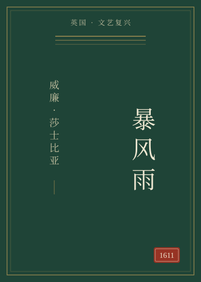
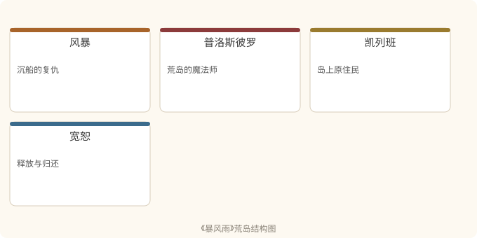

暴风雨
一、基本信息
| 作者 | 莎士比亚 |
|---|---|
| 成书/出版 | 约1611年（通说待核；作者页 B033/B007 口径：major_works 载'暴风雨'） William Shakespeare — Encyclopaedia Britannica（百科全书） |
| 国别/地区 | 英国 |
| 时代 | 近代 · 文艺复兴 |
| 体裁 | 传奇剧 |
| 语言 | 英语 |

《暴风雨》荒岛结构图（主题·结构图）
二、创作背景
作者页（B033/B007）：莎士比亚 major_works 载'暴风雨'（B033 作者页定位，详见 hamlet 条核对）。
题材（通说待核）：被篡位的米兰公爵普洛斯彼罗的荒岛魔法——宽恕与' 我们的 little life'。
三、内容脉络
风暴沉船→凯列班的岛上统治→ Ferdinand 与米兰达的婚约→'释放'（通说待核）。
四、主要人物表
| 人物 | 身份 | 说明 |
|---|---|---|
| 普洛斯彼罗 | 魔法师 | （通说待核） |
| 凯列班 | 岛上原住民 | （通说待核） |
| 爱丽儿 | 精灵 | （通说待核） |
五、主题与艺术特点
- 宽恕的终曲（通说）。
- 殖民主义的先声（凯列班——通说待核）。
- 'Our revels now are ended'（名句通说待核）。
六、影响与评论
- 作者页：莎翁传奇剧代表作（B033/B007 作者页口径）。
William Shakespeare — Encyclopaedia Britannica（百科全书） - 后殖民批评的经典文本（凯列班——通说待核）。
William Shakespeare — Encyclopaedia Britannica（百科全书）
七、阅读建议
难点
- 魔法与舞台机关。
- 传奇剧的宽恕结构。
- 《暴风雨》（朱生豪译本，通说待核）。
- 英文原版（公有领域）。
莎翁晚期收官。
八、待核实
- 1611年宫廷演出说核对。
- 普洛斯彼罗/凯列班/爱丽儿人名核对。
- 'Our revels now are ended'原文核对。
本页主要来源
- William Shakespeare — Encyclopaedia Britannica（百科全书）
- Hamlet — Encyclopaedia Britannica (by David Bevington)（百科全书）
莎士比亚的其他收录作品：哈姆雷特